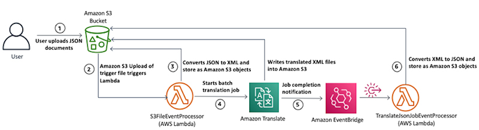

JSON y XML son dos formas de representar datos utilizados en la comunicación entre aplicaciones. Aunque ambos son empleados para transferir información, presentan diferencias clave:
JSON, un formato abierto, destaca por su idoneidad tanto para la lectura por parte de humanos como de máquinas. Independiente de cualquier lenguaje de programación, se erige como una salida común de API en diversas aplicaciones. Su enfoque moderno, flexibilidad y alta popularidad lo posicionan como una elección frecuente en diversos contextos.
Por otro lado, XML se configura como un lenguaje de marcado con reglas definidas para la descripción de datos. Su estructura se basa en etiquetas que permiten distinguir entre atributos y datos reales.
Tanto JSON como XML son formatos de serialización de datos. Permiten intercambiar datos entre diferentes aplicaciones, plataformas o sistemas de manera estandarizada.
Los diferentes lenguajes de programación y plataformas representan los mismos datos de manera diferente. Por ejemplo, una aplicación Java usa un objeto de datos y una aplicación Python usa un diccionario para almacenar información sobre la misma entidad del mundo real. Para intercambiar datos entre ellos, puede seguir los siguientes pasos:
1. Convierta el objeto Java a XML o JSON.
2. Transmita el archivo XML o JSON a través de una red.
3. Vuelva a convertir el diccionario XML o JSON a Python.
Las conversiones están integradas en las bibliotecas de idiomas y esto permite a los programadores escribir aplicaciones que se comuniquen entre sí mediante API. Además, ambos formatos se describen automáticamente, por lo que puede leer y editar archivos JSON y XML en cualquier editor de texto.
Aunque XML es una tecnología más antigua, tanto JSON como XML se siguen utilizando habitualmente.
Aunque JSON y XML tienen propósitos similares, algunas diferencias fundamentales los diferencian. Comprender estas diferencias le ayudará a decidir cuál es más útil para su caso de uso.
El Grupo de Trabajo sobre XML concibió XML en 1996 y publicó su versión inicial en 1998. Derivaron el XML del lenguaje de marcado generalizado estándar (SGML). Tras introducir HTML en 1998, desarrollaron XML como herramienta de serialización de datos. Douglas Crockford y Chip Morningstar publicaron JSON en 2001. Derivaron JSON de JavaScript.
JSON usa pares clave-valor para crear una estructura similar a un mapa. La clave es una cadena que identificará el par. El valor es la información que le da a esa clave. Por ejemplo, podríamos tener "NumberProperty": 10. En este caso, "NumberProperty" es la clave y 10 es el valor. Por el contrario, XML es un lenguaje de marcado, un subconjunto de SGML con una estructura similar a la HTML. Almacena los datos en una estructura de árbol que presenta capas de información que puede seguir y leer. El árbol comienza con un elemento raíz (principal) antes de proporcionar información sobre los elementos secundarios. Esta estructura expansiva es útil para cargar muchas variables y configuraciones dinámicas.
La sintaxis utilizada en JSON es más compacta y fácil de escribir y leer. Permite definir objetos fácilmente. El XML es más detallado y sustituye ciertos caracteres por referencias a entidades. Por ejemplo, en lugar del carácter <, XML utiliza la referencia a la entidad . XML también usa etiquetas finales, lo que lo hace más largo que JSON.
Debe analizar el XML con un analizador XML, lo que a menudo ralentiza y complica el proceso. Puede analizar JSON mediante una función de JavaScript estándar, que es más accesible. Debido a sus diferencias de sintaxis y tamaño de archivo, también puede analizar JSON más rápido que XML.
La documentación del esquema describe el propósito de un archivo y muestra para qué se debe utilizar. Los documentos XML tienen un enlace a su esquema en el encabezado. El esquema también está en formato XML, lo que le permite leer lo que puede esperar encontrar en el archivo. A continuación, puede validar el documento con el esquema y comprobar que todo se ha cargado correctamente y sin errores. JSON también permite utilizar esquemas. Sin embargo, son más simples y permiten una mayor flexibilidad.
JSON solo admite un rango limitado de tipos de datos, como cadenas, números y objetos. JSON también admite matrices booleanas, algo que XML no puede hacer sin añadir etiquetas adicionales. Sin embargo, XML es más flexible y admite tipos de datos complejos, como datos binarios y marcas de tiem
Como lenguaje de marcado, XML es más complejo y requiere una estructura de etiquetas. Por el contrario, JSON es un formato de datos que se extiende desde JavaScript. No utiliza etiquetas, lo que lo hace más compacto y fácil de leer para los humanos. JSON puede representar los mismos datos en un tamaño de archivo más pequeño para una transferencia de datos más rápida.
El análisis de JSON es más seguro que el XML. La estructura de XML es vulnerable a modificaciones no autorizadas, lo que crea un riesgo de seguridad conocido como inyección de entidades externas de XML (XXE). También es vulnerable a la declaración de tipo de documento (DTD) externa no estructurada. Puede evitar estos dos problemas desactivando la característica DTD en la transmisión.